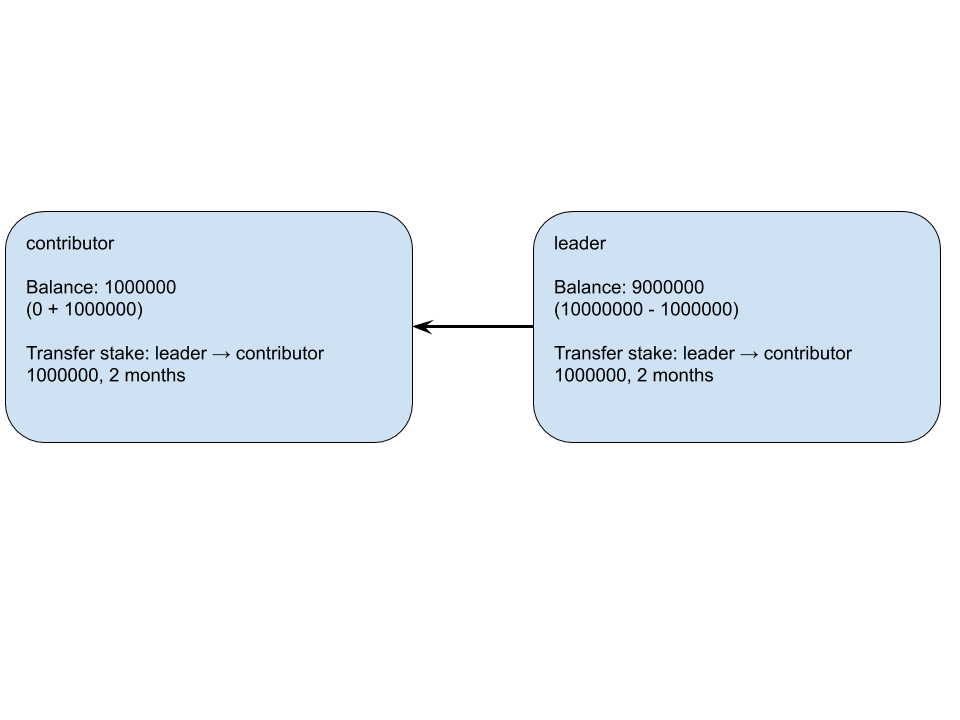
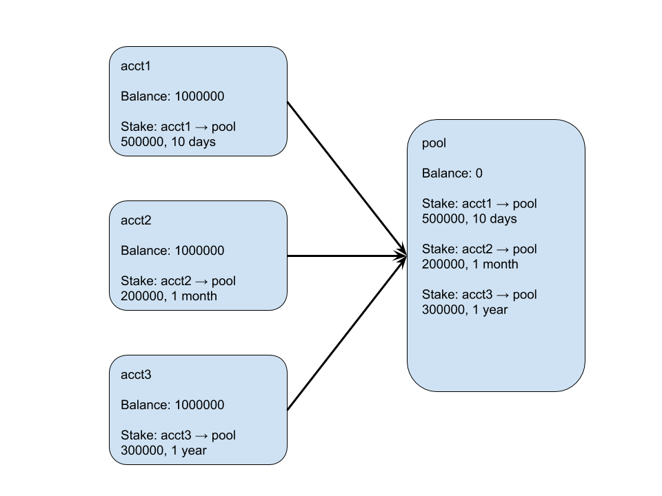

Terminology
Stake - Time-locked, non-spendable token. Also the action of creating this token balance
Delegate - Receiver of staked tokens
Delegator - Giver of staked tokens
Delegation - A token exchange from one balance to a staked balance. Can only be done by the token owner
Self-delegation - A delegation from an account’s liquid balance to its staked balance
Indefinite delegation - A delegation that can be unlocked at any time. Useful for tokens that may be delegated later on. Designated by an `expiration_time` of 0
Transfer delegation - A stake where tokens change ownership. Designated by the `transtake()` action or the `transfer` switch.
Expiration time - Time that delegation unlocks. In stake-related functions, the `time_limit` variable is denoted in seconds forward from current time. In the `staked` and `delegation` tables, the `expiration_time` variable is denoted in microseconds since epoch.
Bonus - Tokens issued based off of contribution to boid network. Contributions are separated into work/power contributions and stake contributions.
Overview of contract changes and rules
- Staking is now on-chain
- Staking includes the possibility for delegation and transfer staking
- Delegated tokens still appear in the token balance of the delegator
- Transfer staked tokens appear in the token balance of the delegate, who is the new owner
- Stake claiming is now on-chain
- Stake claiming now includes the work bonus as well as the typical stake bonus
- Stake claiming also includes automatic return of expired staked tokens to token owner
- All stakes must be over the minimum stake amount at all times
- Existing stakes can be added to as long as the new stake expiration time is equal to or greater than the existing expiration time
- Existing stakes with finite-time expirations must be unstaked all at once
- Overall staked amount valid for stake bonus is capped by the powered stake quantity of a given account
Example stake scenarios
Stakes and transfer stakes should represent an equal-value transaction between the delegate and the delegator
Example 1: Stake to team leader or supernode
Stake to a Boid leader to proxy your votes or to allow them to collect bonuses for the benefit of your tribe.
Example 2: Team leader transfer stake to top contributor
Transfer a staked reward to top contributors. Keep the reward locked for a period of time that seems fair.

Example 3: Create a stake pool
The main difference here with example 1 is that the pool account may have more democratic permissions.

Perform a stake
- Call `stake(from, to, quantity, time_limit, use_staked_balance)`
- Requires permission of delegator
- Staking from liquid balance can only be performed when stakebreak is on
- Check this in `config` table if unsure (0 → off, 1 → on)
- Staking from staked balance can be done at all times
- Must maintain minimum stake amount for all stakes at all times
- If it is a self-delegation, then `from` and `to` should be the same
- `quantity` will be subtracted from your Boid account liquid balance if you are not using your staked balance
- `time_limit` denotes seconds in the future
- If you would like to add or subtract tokens, the new `time_limit` must be the same time or further in the future
- You can use self-staked tokens to perform a delegation to another account
- A simple stake does not cause the token owner to change
Perform a transfer stake
- Call `transtake(from, to, quantity, time_limit)`
- Requires permission of delegator
- Transtake to self is not allowed
- Tokens are time-locked and change hands upon unstake
- Transfer staked tokens are eligible for the same effects as non-transfer staked tokens
Perform an unstake
- Call `unstake(from, to, quantity, time_limit, to_staked_balance, issuer_unstake, transfer)`
- Can only unstake to liquid balance when stakebreak is on
- Can unstake to stake balance at all times
- Requires permission of delegate (new owner) if unstaking transfer staked tokens
- Requires permission of delegator if unstaking non-transfer staked tokens
- Token issuer can unstake tokens as a service
- If stake is time-locked (not indefinite), then all tokens must be unstaked at the same time
- If stake is indefinite, then unstake must result in valid stake
- Must maintain minimum stake amount
Perform a claim
- Call `claim(stake_account, percentage_to_stake, issuer_claim)`
- Token owner or token issuer can call claim as a service
- Token issuer will only call claim if requested by token owner
- Can claim some amount to self stake of stake_account